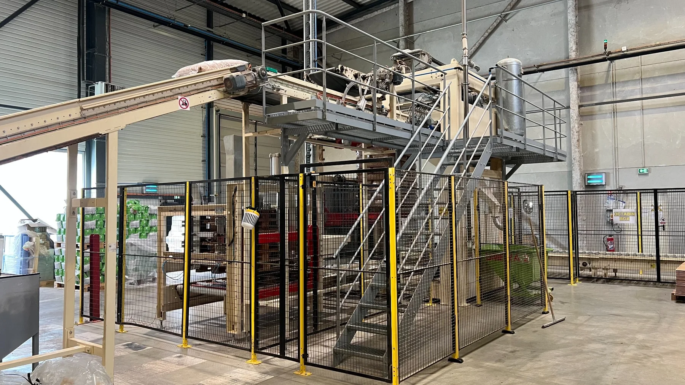

Pulse
PulseInstallation en salle de réception
Sonorisation, lumière et préparation technique pour une configuration propre.
Réalisations
Cette sélection présente les deux pôles Pulse & Process : installations événementielles d’un côté, amélioration terrain et conception technique de l’autre.
PulseSonorisation, lumière et préparation technique pour une configuration propre.
 Pulse
PulsePont lumière, enceintes, câblage et adaptation à un lieu atypique.
 Pulse
PulseImplantation sobre pour sonoriser un espace de représentation.
 Pulse
PulseAménagement audio / vidéo, intégration et mise en ambiance de l’espace.
 Process
ProcessObservations, chrono, diagnostic et plan d’actions priorisé.
 Process
ProcessPassage du relevé terrain à une solution modélisée et exploitable.

ProcessIntégration de la solution dans l’environnement réel de production.
 Process
ProcessAnalyse visuelle des flux, stocks, temps et points de décision.